Definitions.
In the event plots the dashed frame is the main-track bounding box enlarged by 20 mm on each side.
Normalization: only the 8486 events with all deposits inside the detector box enter efficiency numerators and denominators. The 509 events outside it are excluded from the sample.
| Step | Accepted | Rejected at this step | Efficiency |
|---|---|---|---|
| All deposits inside Z = 0–1500 mm | 8486 | 509 | 100% (normalization sample) |
| Primary vertex in Z = 50–1450 mm | 8174 | 312 | 96.32% of contained |
| Reject gamma veto (gamma deposits outside the frame above 3 keV) | 6156 | 2018 | 72.54% of contained |
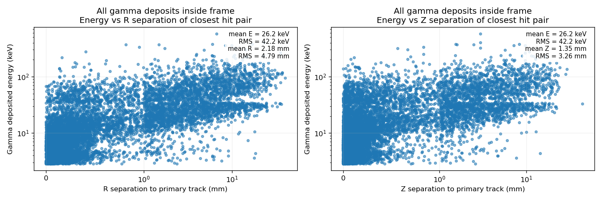
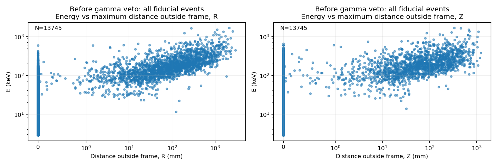
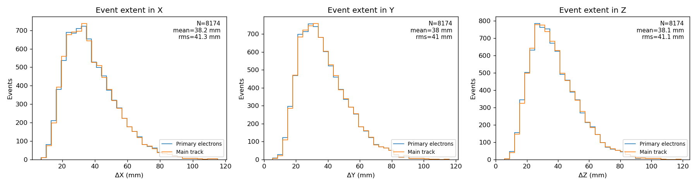
Extent of the main track per event. The statistics box in each extent plot refers to the main track.
| Axis | Mean (mm) | RMS (mm) | 95th percentile (mm) | Maximum (mm) |
|---|---|---|---|---|
| X | 38.16 | 41.28 | 67.74 | 115.34 |
| Y | 38.01 | 40.99 | 67.03 | 115.98 |
| Z | 38.11 | 41.14 | 67.22 | 119.01 |
No outside-frame gamma deposits survive in this sample.
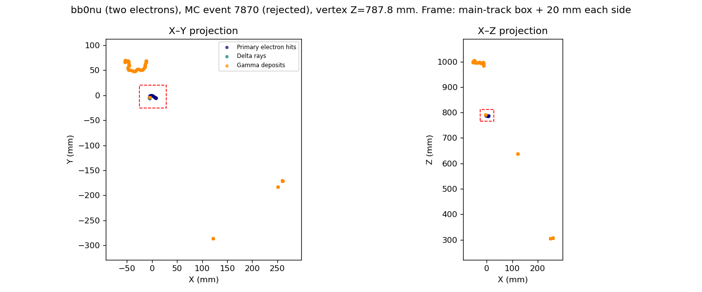
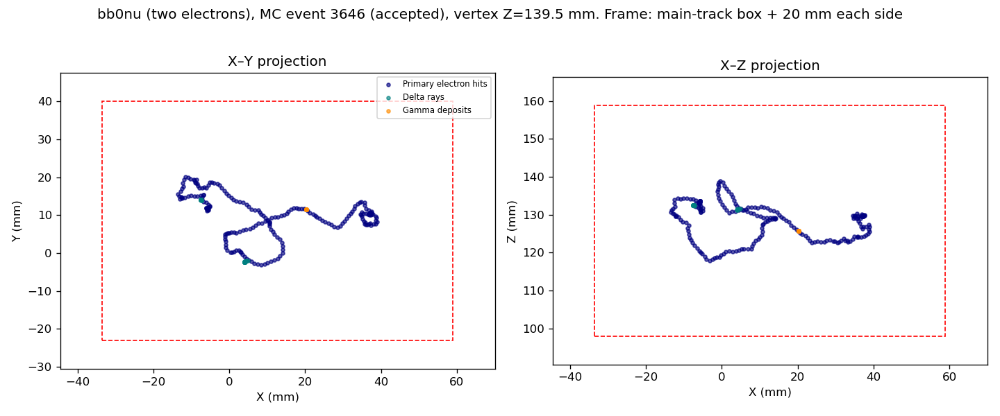
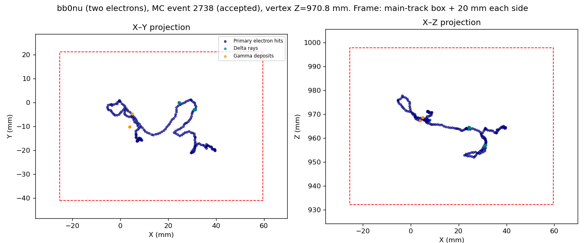
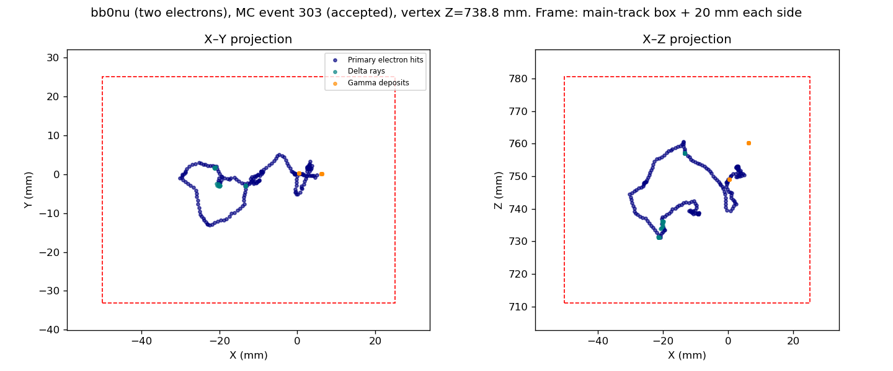
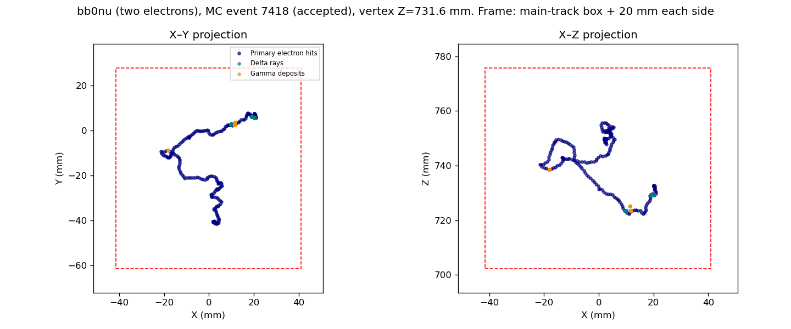
Normalization: only the 7817 events with all deposits inside the detector box enter efficiency numerators and denominators. The 666 events outside it are excluded from the sample.
| Step | Accepted | Rejected at this step | Efficiency |
|---|---|---|---|
| All deposits inside Z = 0–1500 mm | 7817 | 666 | 100% (normalization sample) |
| Primary vertex in Z = 50–1450 mm | 7531 | 286 | 96.34% of contained |
| Reject gamma veto (gamma deposits outside the frame above 3 keV) | 5481 | 2050 | 70.12% of contained |
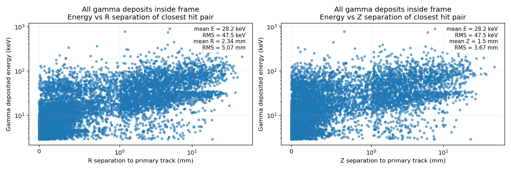
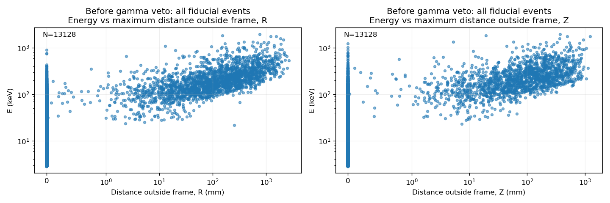
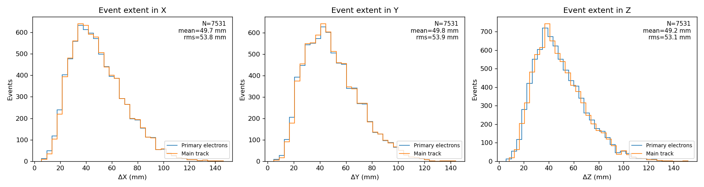
Extent of the main track per event. The statistics box in each extent plot refers to the main track.
| Axis | Mean (mm) | RMS (mm) | 95th percentile (mm) | Maximum (mm) |
|---|---|---|---|---|
| X | 49.67 | 53.79 | 88.52 | 146.40 |
| Y | 49.83 | 53.89 | 88.87 | 143.91 |
| Z | 49.19 | 53.14 | 86.84 | 151.63 |
No outside-frame gamma deposits survive in this sample.
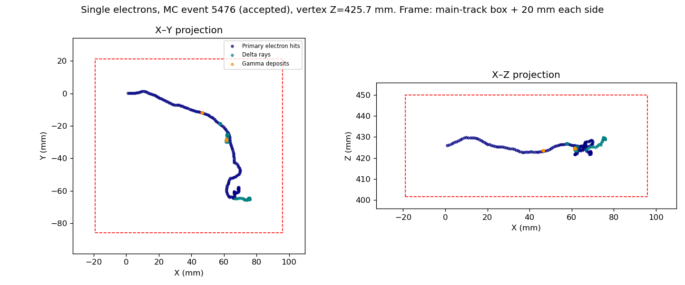
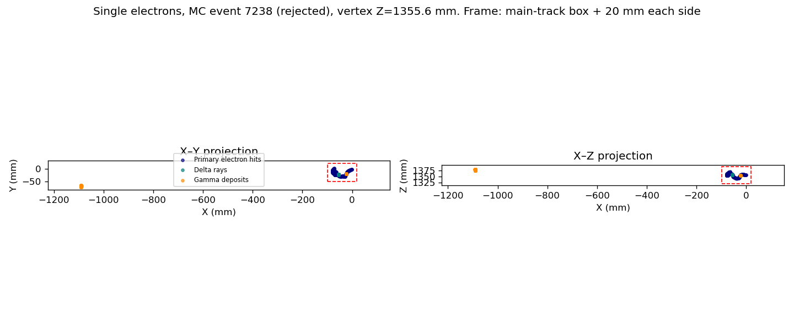
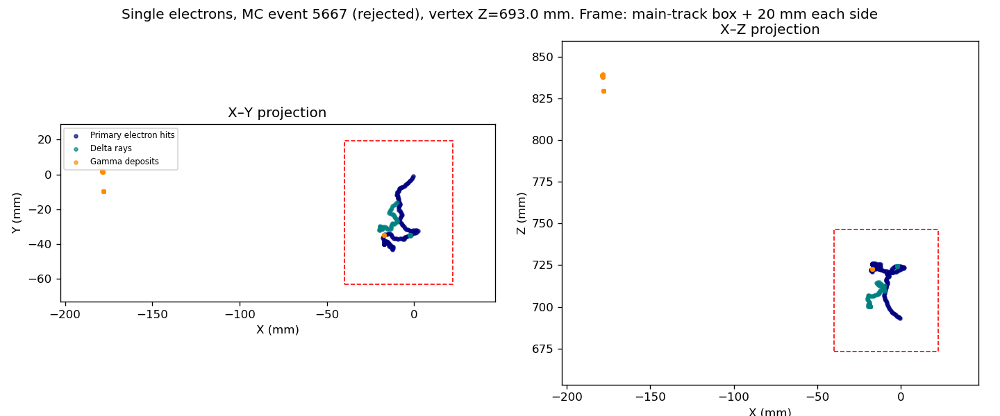
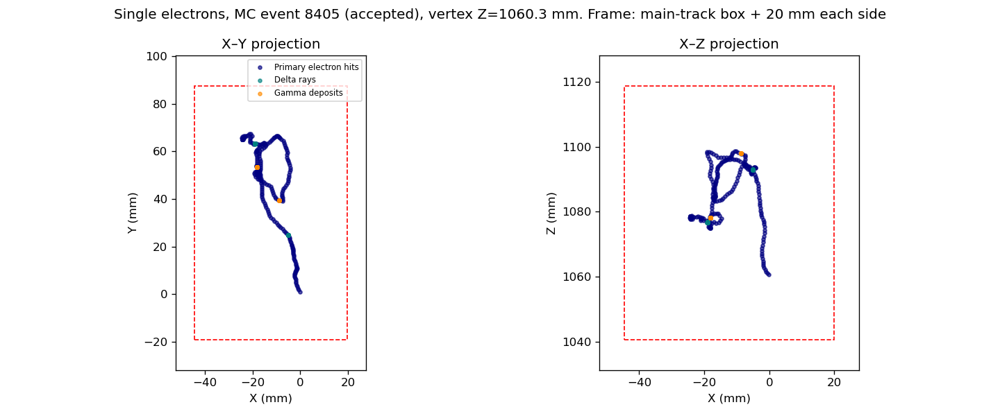
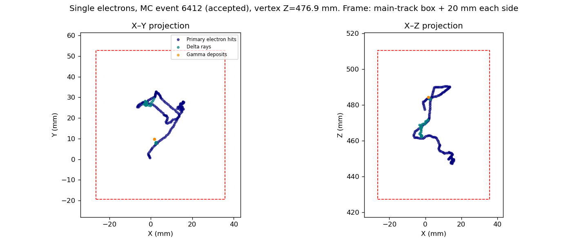